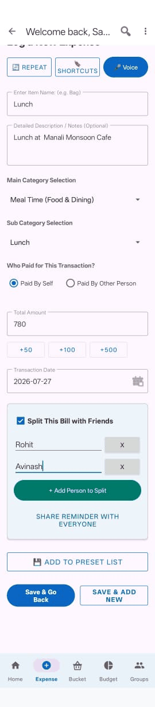
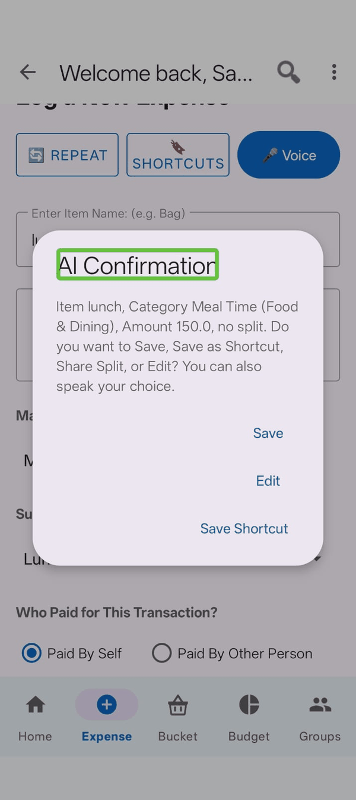
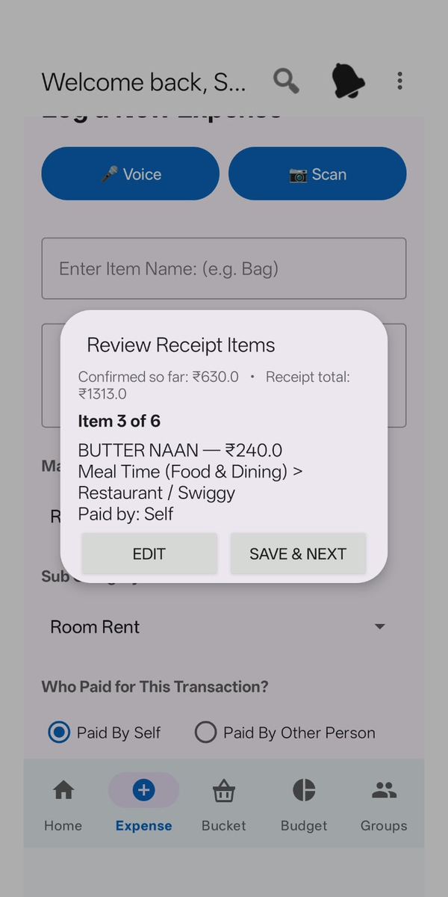
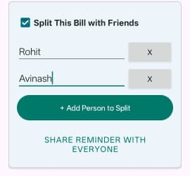

Typing an expense

- Open the Expense tab.
- Item Name — what you bought, for example "Milk" or "Room Rent".
- Amount — just the number.
- Category and Subcategory — pick from the lists.
- Save Expense.
As you type the item name, Zebal tries to pick the category for you. If it gets it wrong, just change it — the choice is always yours.
Adding several things in a row
Use Save & Add More instead. It saves what you've entered and clears the form so you can go straight into the next one, without leaving the screen.
If no category fits
Choose Other / Miscellaneous. A box appears where you can type your own description, so nothing is lost just because the list doesn't have the right name.
Speaking an expense

Tap the microphone button and say what you spent. Normal sentences work:
- "Spent five hundred rupees on groceries"
- "Paid three thousand for room rent"
- "Two hundred on petrol"
Zebal fills in the item, amount and category, then shows you what it understood so you can check it before saving.
Always check what it filled in. Speech recognition can mishear an amount, especially in a noisy place. A quick glance before saving avoids a wrong figure sitting in your records.
Scanning a receipt

Instead of typing or speaking each item, point your camera at a paper receipt and let Zebal read it for you.
- Open the Expense tab and tap the receipt/camera icon.
- Photograph the receipt. If it's long, you can take more than one photo — Zebal stitches them together.
- Wait a moment while it reads the receipt.
- Go through the items it found — each one is broken out separately, so you can fix a wrong price or category before anything is saved.
- Save.
Receipt Scan works for a personal expense and for a group expense alike — the same scan-and-review flow appears when you're adding an expense inside a group.
Check the items before saving, the same as with voice. A crumpled receipt or a faint print can occasionally trip up what gets read — a quick glance catches it before a wrong figure sits in your records.
Who paid
By default an expense is recorded as paid by you. If someone else paid, choose Other and type their name.
Splitting a bill

Tick Split with loved ones and add the names of the people sharing it. There are four ways to split:
| Method | Use it when |
|---|---|
| Split Evenly | Everyone pays the same. The most common choice. |
| Split by Amount | You know exactly what each person owes — for example everyone ordered separately. |
| Split by Share | Some people should pay proportionally more — for example one person had two portions. |
| Split by Percentage | You want to divide it by percentage rather than by amount. |
This split is for your own records. If you want the app to track who owes whom over time and work out settlements, use a Group instead.
Presets
If you buy the same set of things regularly — a weekly grocery run, say — you can save it as a preset and load it back with one tap instead of typing it out again.
Use Add to Preset to save the current entry, and My Presets to load one.
Recurring bills
For anything that charges you on a schedule — rent, a subscription, an EMI — set it up once and Zebal records it automatically.
- On the Expense tab, tap Manage Recurring.
- Tap the button to add a new automation.
- Enter the name, amount and category.
- Choose how often: Daily, Weekly, Monthly or Yearly.
- Pick the date it starts.
- Save.
From then on the expense is added for you each cycle. On the list of automations, tapping one pauses or resumes it, and holding it down deletes it.
If your phone was off or the app unopened for a while, Zebal catches up the next time it runs — each missed cycle is recorded against the date it was actually due, not today, so your monthly totals stay accurate.
Editing or deleting an expense
On the Home tab, tap any expense to see its full details, then use Quick Edit to change the name or amount. The bin icon on the right deletes it, after asking you to confirm.